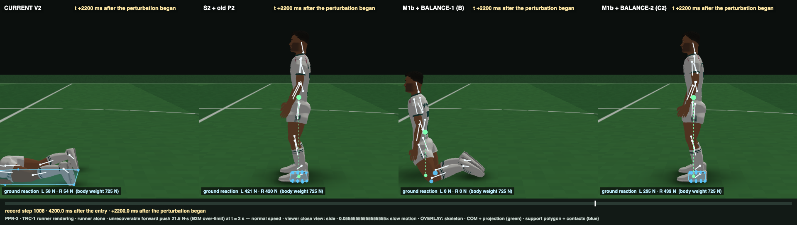
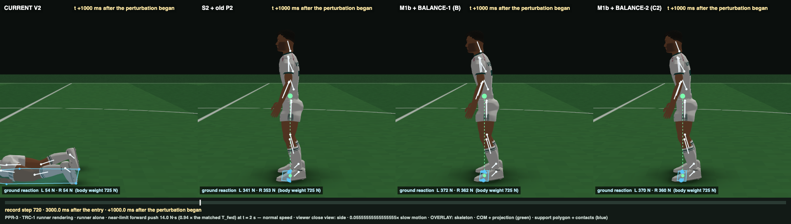
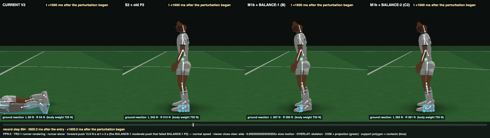

On the frozen matched battery B2M, the adopted M1b + BALANCE-2 C2 scores 16 / 17, failing only P8 (backward small overshoot 0.287 vs ≤ 0.26). BALANCE-1 B also scores 16 / 17, failing only P8, with overshoot up to 0.609. Causality re-audit: PASS. PVP was not run.
Owner decision needed before PVP: the review clips and a post-hoc physical-boundary diagnostic show C2 rocking onto its rigid boot tips (heels up to ≈ 16°, COM up to 138 mm ahead) and returning to standing from forward pushes of up to 21.5 N·s. The frozen fall rule (static entry support edge, 103 mm) scores those pushes as falls. C2's physical forward limit (≈ 21.62 N·s) is above the matched band (≤ 18.22): in effect, control is compensating for the rigid-toe limitation. Whether boot-tip support is legitimate is the support-representation decision (audit §4 / §10 G).
CURRENT V2 and S2 + old P2: outcome criteria only (n/a = defined on the M1b controllers' channel / law records). Same battery and recovery definitions for all.
| CURRENT V2 2 / 11 | S2 + old P2 6 / 11 | M1b + BALANCE-1 B 16 / 17 | M1b + BALANCE-2 C2 16 / 17 | criterion | |
|---|---|---|---|---|---|
| U1 | ✗ | ✓ | ✓ | ✓ | [D] quiet standing 60 s with motor noise: no fall (COM within 100 mm of entry, pelvis drop < 150 mm), no stop… |
| U2 | n/a | n/a | ✓ | ✓ | [D/S] first 250 ms: load steps 1–4 within ±10 % BW, steps 5–60 within ±1 %; penetration and separation ≤ 1 mm; COP within 5 mm of the COM projection f… |
| U3 | ✗ | ✓ | ✓ | ✓ | [D] no slow fold or creep: last-10-s mean vs 1–2 s mean — key axes ≤ 3°, pelvis ≤ 10 mm, COM ≤ 15 mm… |
| U4 | ✗ | ✓ | ✓ | ✓ | [M/E] alive but bounded: COM sway RMS AP within [1.0, 12.9] mm, ML within [0.43, 6.0] mm (human 4.1–4.3 / 1.7–2.0, Foulger 2025, × [0.25, 3])… |
| U5 | n/a | n/a | ✓ | ✓ | [S] separation ≤ 5 mm and penetration ≤ 1 mm over 60 s… |
| U6 | n/a | n/a | ✓ | ✓ | [M/D] quiet-standing joint-angle SD within [0.1, 0.6]° for both ankles (df), knees (flex), hips (flex) and the neck (flex) (Wang 2014 side-by-side sta… |
| P1 | ✗ | ✓ | ✓ | ✓ | small pushes (fwd 4.82 / back 5.84 [matched] / lateral 7.5 N·s): recovered without a step (no fall; COM within 10 mm of the twin over the last 1 s; pe… |
| P2 | ✗ | ✗ | ✓ | ✓ | moderate pushes (fwd 9.64 / back 11.68 [matched] / lateral 15.0 N·s): recovered without a step… |
| P3 | ✓ | ✗ | ✓ | ✓ | over-limit pushes (fwd 21.50 / back 26.07 [matched] / lateral 32.5 N·s): loss of no-step balance within 4 s in every direction — a feet-in-place save … |
| P4 | ✗ | ✓ | ✓ | ✓ | P4′ continuum (corrected): per direction, with levels ordered by impulse — (a) falls are upward-closed; (b) peak COM excursion strictly increases acro… |
| P5 | n/a | n/a | ✓ | ✓ | [causality] every push: commands bit-identical to the undisturbed twin until the disturbance reaches the controller's delayed observations; first comm… |
| P6 | n/a | n/a | ✓ | ✓ | [M] tiered latency (literature §19.3.4 / PPR-3 §1g): first neural torque change (developed force × entry capacity, > 0.1 N·m) (a) at ankle / knee / hi… |
| P7 | n/a | n/a | ✓ | ✓ | [M weak] no superhuman corrective-torque rise: both-ankle AP torque max 25-ms slew ≤ 906 N·m/s for small and moderate forward / backward pushes (Robin… |
| P8 | ✗ | ✗ | ✗ | ✗ | [M] human overshoot: for small and moderate pushes in every direction, the COM excursion past the twin opposite to the push after the peak ≤ 0.26 × th… |
| M1 | ✗ | ✗ | ✓ | ✓ | [M/E] Rietdyk-matched pushes: forward 10.58 N·s over 367 ms (88 steps; the thesis A-P pelvis push at its duration-corrected fraction on this fixture),… |
| T1 | ✗ | ✗ | ✓ | ✓ | [M/E] no-step failure threshold (50 ms pelvis pulse) in every direction: forward within [13.01, 18.22] N·s and backward within [15.77, 22.08] N·s (mat… |
| DET | ✓ | ✓ | ✓ | ✓ | [S] bit-identical reruns (4 s standing; moderate forward push)… |
| CURRENT V2 | S2 + old P2 | M1b + BALANCE-1 B | M1b + BALANCE-2 C2 | T1′ band | |
|---|---|---|---|---|---|
| fwd | 0.14 | 24.32 | 14.36 | 16.64 | 13.01–18.22 |
| back | 0.17 | 20.23 | 18.19 | 19.55 | 15.77–22.08 |
| left | 0.36 | 20.05 | 25.88 | 25.88 | 21.8–49.8 |
| right | 0.36 | 20.05 | 27.34 | 26.61 | 21.8–49.8 |
| push | BALANCE-1 B | BALANCE-2 C2 |
|---|---|---|
| fwd.small | 0.284 | 0.05 |
| fwd.moderate | 0.224 | 0 |
| back.small | 0.609 | 0.287 |
| back.moderate | 0.49 | 0.232 |
| left.small | 0.038 | 0.033 |
| left.moderate | 0.021 | 0.023 |
| right.small | 0.049 | 0.04 |
| right.moderate | 0.06 | 0.061 |
NOT a criterion. A push is a physical fall only if, within 4 s, the pelvis drops > 150 mm or a foot unloads, or the COM is not back within 30 mm of the twin.
| J (N·s) | frozen rule | physically | peak COM mm | foot pitch |
|---|---|---|---|---|
| 14.83 | fall | not back within 30 mm at 4 s | 105.7 | 8.5° |
| 16.64 | fall | not back within 30 mm at 4 s | 130.1 | 10.7° |
| 18.22 | fall | falls (pelvis drop 2.27 s) | 1499.5 | 88.4° |
| 20 | fall | falls (pelvis drop 1.79 s) | 1649.4 | 85.9° |
| 21.5 | fall | falls (pelvis drop 1.59 s) | 1562.1 | 82.3° |
| 23 | fall | falls (pelvis drop 1.42 s) | 1583.3 | 69.3° |
| 25 | fall | falls (pelvis drop 1.30 s) | 1560.5 | 66.7° |
| 28 | fall | falls (pelvis drop 1.13 s) | 1566.8 | 66.5° |
| J (N·s) | frozen rule | physically | peak COM mm | foot pitch |
|---|---|---|---|---|
| 14.83 | recovered | returns to standing | 97.4 | 8.5° |
| 16.64 | fall | returns to standing | 102.1 | 9.6° |
| 18.22 | fall | returns to standing | 108.4 | 10.7° |
| 20 | fall | returns to standing | 120.7 | 12.4° |
| 21.5 | fall | returns to standing | 138.2 | 16.1° |
| 23 | fall | falls (pelvis drop 1.67 s) | 1719.7 | 83.8° |
| 25 | fall | falls (pelvis drop 1.26 s) | 1566.1 | 88.8° |
| 28 | fall | falls (pelvis drop 1.07 s) | 1578.6 | 87.7° |
21.5 N·s forward, +1.0 s: B and C2 on their boot tips

+2.2 s: B has fallen; C2 is standing again

14 N·s near-limit, +1.0 s: rigid tiptoe, no hip or arm response

12 N·s, +1.6 s: B still on its forefoot; C2 flat-footed
| motor-noise cv | 0 | 0.025 | 0.05 | 0.1 |
|---|---|---|---|---|
| COM RMS AP (mm) | 0.18 | 1.74 | 3.33 | 7.58 |
| frequency (Hz) | 0.91 | 0.28 | 0.34 | 0.16 |
Human 4.1–4.3 mm. C2 sway is noise-driven (0.18 mm without noise): the amplitude deficit is the noise model, not controller bandwidth. Not changed.
Panels left to right: CURRENT V2 · S2 + old P2 · M1b + BALANCE-1 (B) · M1b + BALANCE-2 (C2). Same recorded step in every panel. Nothing was tuned from the clips.
undisturbed standing from the PPR-3 entry, 0–6 s (each controller with its own motor noise) — normal speed · 361 frames
undisturbed standing from the PPR-3 entry, 0–6 s (each controller with its own motor noise) — 0.25× slow motion, steps 480–720 · 241 frames
small forward push 4.82 N·s (B2M small) at t = 2 s — normal speed · 265 frames
small forward push 4.82 N·s (B2M small) at t = 2 s — 0.25× slow motion, steps 456–696 · 241 frames
forward push 12.0 N·s at t = 2 s (the BALANCE-1 moderate push that failed BALANCE-1 P2) — normal speed · 265 frames
forward push 12.0 N·s at t = 2 s (the BALANCE-1 moderate push that failed BALANCE-1 P2) — 0.25× slow motion, steps 456–936 · 481 frames
matched moderate backward push 11.69 N·s (B2M) at t = 2 s — normal speed · 265 frames
matched moderate backward push 11.69 N·s (B2M) at t = 2 s — 0.25× slow motion, steps 456–816 · 361 frames
matched moderate lateral (left) push 15.0 N·s (B2M) at t = 2 s — normal speed · 265 frames
matched moderate lateral (left) push 15.0 N·s (B2M) at t = 2 s — 0.25× slow motion, steps 456–816 · 361 frames
near-limit forward push 14.0 N·s (0.94 × the matched T_fwd) at t = 2 s — normal speed · 265 frames
near-limit forward push 14.0 N·s (0.94 × the matched T_fwd) at t = 2 s — 0.25× slow motion, steps 456–936 · 481 frames
unrecoverable forward push 21.5 N·s (B2M over-limit) at t = 2 s — normal speed · 205 frames
unrecoverable forward push 21.5 N·s (B2M over-limit) at t = 2 s — 0.25× slow motion, steps 456–816 · 361 frames
Report: balance2/BALANCE2_REPORT.md · design log: balance2/successor/C2_DESIGN_LOG.md · preregistration: balance2/BALANCE2_SUCCESSOR_PREREGISTRATION.md